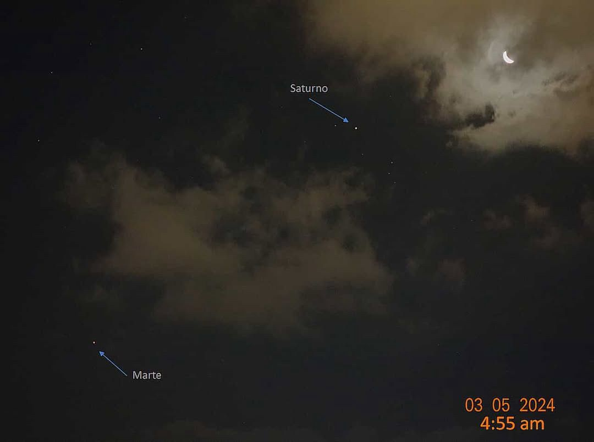

Telescopio Greteli
Imágenes tomadas por nuestro Telescopio "Greteli"
Ver másProyecto Sedna se enfoca en la visualización, dinámicas estelares, detección de anomalías y combinaciones infinitas de astronomía.
Proporcionar un sistema para poder explorar y estudiar las maravillas del universo.
Ser un proyecto dedicado a cumplir los sueños de futuros astrónomos.
Imágenes tomadas por nuestro Telescopio "Greteli"
Ver másCampañas enfocadas en el estudio de nuestra Galaxia Vecina y sus Satélites.
Ver másImplementación de tecnología de última generación para rastrear nuestro satélite principal.
Ver más